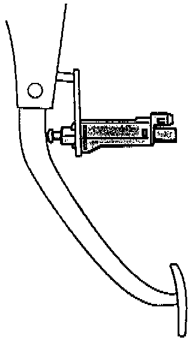

Operation CHARM
: Car repair manuals for everyone.
Home
>>
Volkswagen
>>
1997
>>
GTI (1H1) V6-2.8L (AAA)
>>
Repair and Diagnosis
>>
Powertrain Management
>>
Transmission Control Systems
>>
Sensors and Switches - Transmission and Drivetrain
>>
Sensors and Switches - A/T
>>
Shift Interlock Switch
>>
Description and Operation
Shift Interlock Switch: Description and Operation
Brake Light Switch:

SHIFTLOCK SWITCH
The Shiftlock Switch is located on the pedal cluster. The information about pedal operation is required for the Shiftlock function.